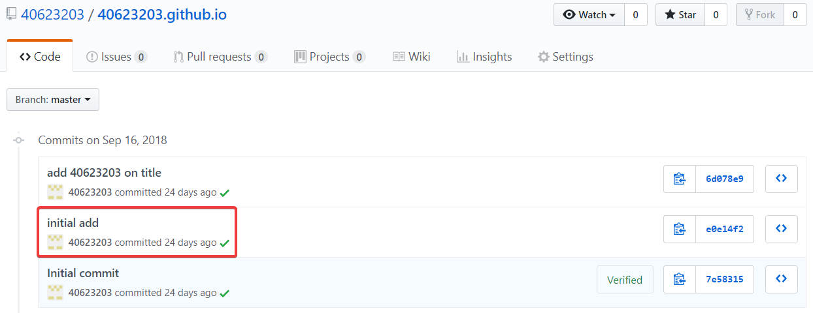
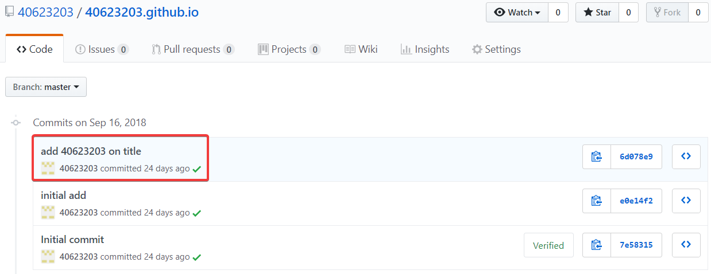

Week1
大學就像餐廳，每個老師教的都是養分，要多方學習，加強吸收自己所需的營養，不斷的學習，並且學習如何做得更好吃
1. 在github帳號下，新增一個New repository，名為 : 學號.github.io

2. 將自己新增的倉儲與老師的倉儲 clone 下來


3. 將老師的資料複製，除了 .git 和 README.me 全部貼入自己的資料夾

4. 綁定帳號及用 SciTE 確認是否正確

5. 用 git status 查看所有檔案目前的狀況，之後再 git add . > git commit -m "initial add " >git push ，將剛剛新增的檔案推上去

6. 開啟 python wsgi.py ，進入近端，更改標題名稱

7. 重複git status> git add。> git commit -m“在標題上添加名稱”> git push後完成

組員操作影片 << Previous Next >> 教學影片1